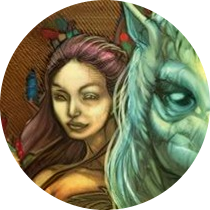
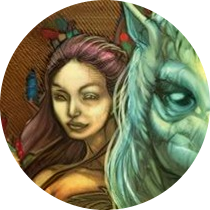

Dea Matrona, uma deusa significativa para os celtas continentais, desempenha o papel de uma "deusa mãe", uma figura central na mitologia celta. Sua representação frequentemente envolve três mulheres, um número sagrado para os celtas, que atribuíam grande importância a simbolismos numéricos em sua espiritualidade. A conexão de Dea Matrona com a figura da "deusa mãe" indica seu papel como uma divindade associada à fertilidade, à maternidade e ao cuidado. Na mitologia celta, a terra era vista como uma mãe que nutria e sustentava a vida, e Dea Matrona personificava essa energia maternal, simbolizando a abundância e a prosperidade. A representação de Dea Matrona como três mulheres destaca a crença celta na tríade, um conceito central em sua cosmologia. O número três era considerado sagrado e poderoso, representando harmonia, equilíbrio e completude. As três faces de Dea Matrona podem ter representado diferentes aspectos da vida, como passado, presente e futuro, ou os ciclos da lua e as estações do ano, refletindo a conexão profunda dos celtas com a natureza e seus padrões cíclicos. Apesar da escassez de detalhes específicos sobre mitos e rituais associados a Dea Matrona devido à falta de registros escritos detalhados, sua presença como uma deusa mãe na mitologia celta evidencia a reverência dos antigos celtas pela feminilidade, pela fertilidade da terra e pelo poder criativo que sustenta toda a vida. O culto a Dea Matrona representa não apenas uma deidade específica, mas também um aspecto fundamental da cosmovisão celta, que valorizava a interconexão entre a humanidade, a natureza e o divino.
Dea Matrona